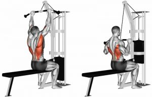

GELMİŞ GEÇMİŞ İYİ SIRT ANTRENMANLARI
 Sırt, bacakların ve diğer vücut bölgelerinin yanında, geliştirilmesi en zor vücut bölgelerinden biridir. Üst sırt kaslarınız, vücudun en geniş bölgelerinden birini oluşturur ve bu nedenle hipertrofi egzersizlerinin yanı sıra yağ kaybı egzersizlerinde bile bu bölgeyi çalıştırmak oldukça önemli etkiler yaratır. Ancak unutmamak gerekir ki, güçlü ve sağlıklı bir sırt, sadece daha iyi hissetmenize değil, aynı zamanda daha iyi görünmenize de yardımcı olur. Böylece diğer vücut egzersizlerinizden daha fazla verim almanızı sağlar. Sırt kaslarınızı geliştirmek için uyguladığınız özel sırt egzersizleri, kilo kaybının yanı sıra, duruş bozukluğunuzu düzeltmek için de oldukça önemlidir. İnsanlar genellikle yaptıkları egzersizlerde göğüslere, karın bölgesine veya vücudun diğer kısımlarına odaklanır. Oysa sırt kaslarının ihmal edilmesi, vücutta kas dengesizliklerinin oluşmasına, postürün bozulmasına ve zamanla vücudunuzun kamburlaşmasına sebep olur. Etkili sırt antrenmanları:
|